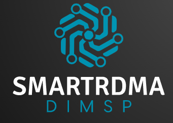

<!DOCTYPE HTML>
<!--
	Stellar by HTML5 UP
	html5up.net | @ajlkn
	Free for personal and commercial use under the CCA 3.0 license (html5up.net/license)
-->
<html>
	<head>
		<title>SmartRDMA</title>
		<meta charset="utf-8" />
		<meta name="viewport" content="width=device-width, initial-scale=1, user-scalable=no" />
		<link rel="stylesheet" href="assets/css/main.css" />
		<noscript><link rel="stylesheet" href="assets/css/noscript.css" /></noscript>
	</head>
	<body class="is-preload">

		<!-- Wrapper -->
			<div id="wrapper">

				<!-- Header -->
					<header id="header" class="alt">
						<span class="logo"></span>
						<h2>In-network accelerated <br> Distributed In-Memory Storage and Processing (DIMSP) system</h2>
					</header>

				<!-- Nav -->
					<nav id="nav">
						<ul>
							<li><a href="#intro" class="active">Introduction</a></li>
							<li><a href="#first">Roadmap</a></li>
							<li><a href="#second">Publication</a></li>
							<li><a href="#cta">Get Started </a></li>
						</ul>
					</nav>

				<!-- Main -->
					<div id="main">

						<!-- Introduction -->
							<section id="intro" class="main">
								<div class="spotlight">
									<div class="content">
										<header class="major">
											<h2>What is SmartRDMA DIMSP?</h2>
										</header>
										<p> SmartRDMA is a novel smart DIMSP system exploiting modern programmable network devices such as programmable switch and Data Processing Unit (DPU). 										</p>
										<ul class="actions">
											<li><a href="generic.html" class="button">Learn More</a></li>
										</ul>
									</div>
									
								</div>
							</section>

						<!-- First Section -->
							<section id="first" class="main special">
								<header class="major">
									<h2>Roadmap</h2>
								</header>
								<ul class="features">
									
									<li>
										<span class="icon major style3 fa-gem"></span>
										<h3>Milestones</h3>
										<p></p>
									</li>
									
									
									
									<li>
										<a href="https://github.com/smartrdma/codebase"><span class="icon solid major style1 fa-code"></span></a>
										<h3>Source code</h3>
										<p>SmartRDMA is going to be implemented in C language. It is pblicly available under MIT license in the Github. Don't hesitate to report any issue and pull request for contribution.</p>
									</li>
									<li>
										<span class="icon major style3 fa-copy"></span>
										<h3>Publication</h3>
										<p> </p>
									</li>

								</ul>

							</section>

						<!-- Second Section -->
							<section id="second" class="main special">
							<header class="major">
							<h2>Team members</h2>
							
								


<ul class="features">								

                
									<li>                
          
                        <figure>
                            
                        </figure>       
										<p> test1 </p>
	</li>
	
										<li>                
          
                        <figure>
                            
                        </figure>    
<p> test2 </p>
	</li>

	
											<li>                
          
                        <figure>
                            
                        </figure>            
												<p> test3 </p>
	</li>
	
	
	

											<li>                
          
                        <figure>
                            
                        </figure>            
	</li>
	
	
	
	</ul>
								
								
								
								
								
								
								
								
								
								
								
								
								
								
								
								
								
								

								
								
								
							</section>

						<!-- Get Started -->
							<section id="cta" class="main special">
								<header class="major">
									<h2>DIMSP Systems</h2>
									<p>In our increasingly connected and digitized era, an explosive volume of data is being generated. Such large-scale and complex data cannot be stored, accessed, and processed efficiently by traditional “one-piece” data management systems. So distributed in-memory storage systems (e.g., Redis, Memcached) and distributed in-memory processing systems (e.g., Spark) have gained a strong foothold due to their ability to manage massively distributed data. Distributed In-Memory Storage and Processing (DIMSP) systems are vital as the building blocks of many high-level applications with data-intensive tasks. In every DIMSP system data is partitioned across many nodes in a datacenter and accessed by distributed clients.</p>
								</header>
								<footer class="major">
									<ul class="actions special">
										<li><a href="generic.html" class="button">Learn More</a></li>
									</ul>
								</footer>
							</section>

					</div>

				<!-- Footer -->
					<footer id="footer">
						<section>
							<h2>High Performance Computing (HPC) <br> Simula Research Laboratory</h2>
							<p>the HPC department at Simula investigate several topics, including methodologies of parallel and distributed programming, hardware-compatible and/or inspired numerical strategies, software tools for user-friendly deployment and optimization of scientific code, plus real-world applications from various branches of computational science. The department will actively engage in multi-disciplinary collaborations across the departmental boundaries within Simula, as well as nationally and internationally.</p>
						</section>
						<section>
							<h2>Contact</h2>
							<dl class="alt">
								<dt>Investigator</dt>
								<dd>Masoud Hemmatpour</dd>
								<dt>Address</dt>
								<dd>Kristian Augusts gate 23, 0164, Oslo</dd>
								<dt>Phone</dt>
								<dd>+47 922 50 962</dd>
								<dt>Email</dt>
								<dd><a href="#">mashemat@simula.no</a></dd>
							</dl>
							<ul class="icons">
								<li><a href="#" class="icon brands fa-twitter alt"><span class="label">Twitter</span></a></li>
								<li><a href="https://github.com/smartrdma" class="icon brands fa-github alt"><span class="label">GitHub</span></a></li>
							</ul>
						</section>
						<p class="copyright">&copy; Untitled. Design: <a href="https://html5up.net">HTML5 UP</a>.</p>
					</footer>

			</div>

		<!-- Scripts -->
			<script src="assets/js/jquery.min.js"></script>
			<script src="assets/js/jquery.scrollex.min.js"></script>
			<script src="assets/js/jquery.scrolly.min.js"></script>
			<script src="assets/js/browser.min.js"></script>
			<script src="assets/js/breakpoints.min.js"></script>
			<script src="assets/js/util.js"></script>
			<script src="assets/js/main.js"></script>

	</body>
</html>
